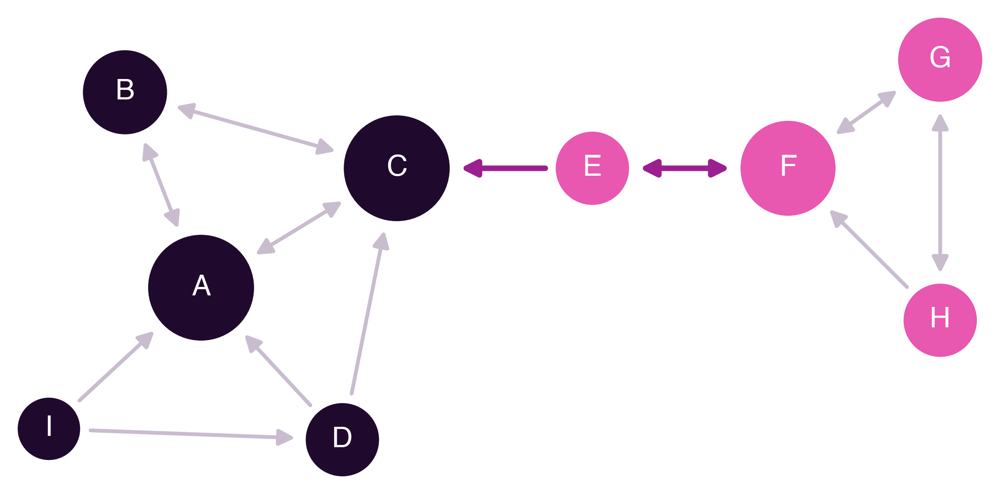
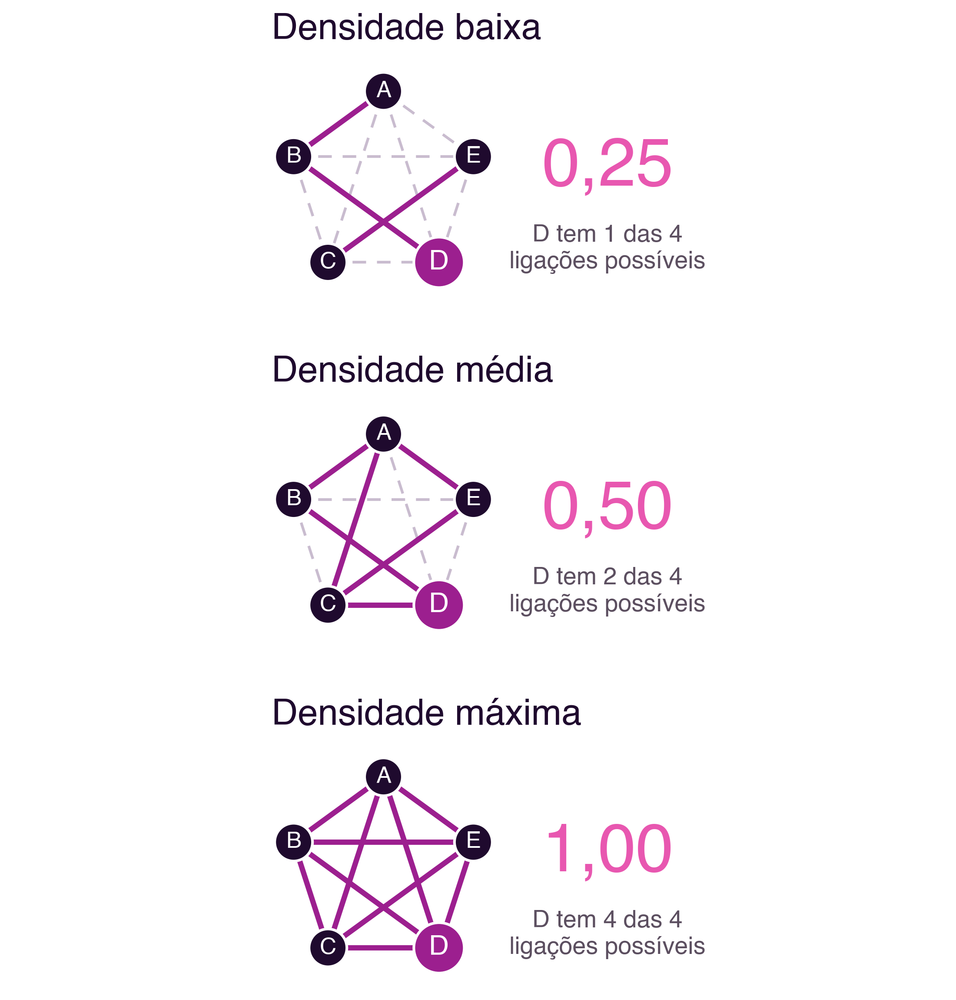
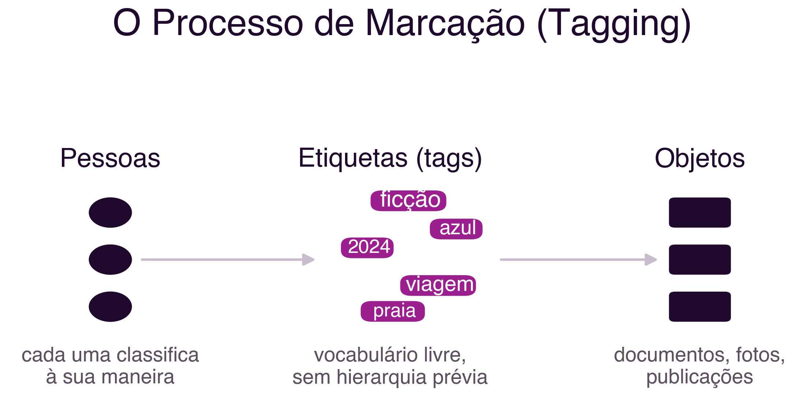

3 Redes Sociais: Métricas e Folksonomia
Redes Sociais: Métricas e Folksonomia
Introdução
O capítulo anterior introduziu, a par do grafo social, um segundo modelo de organização da informação em redes sociais: o grafo de interesses, em que a proximidade relevante deixa de ser entre pessoas e passa a ser entre uma pessoa e os temas com que interage (Secção 2.2.1). Este capítulo desenvolve essa ideia em duas direções complementares. Primeiro, apresenta a Análise de Redes Sociais: o seu propósito, o método que permite passar de um conjunto de relações entre pessoas a um sociograma, e as métricas concretas que respondem a perguntas como “quem é mais influente nesta rede?”, “quem liga grupos que de outra forma não comunicariam?” ou “quão coesa é esta comunidade?”. Um exemplo completo, acompanhado do princípio ao fim, mostra como cada métrica se calcula e, sobretudo, como se interpreta. Depois, aprofunda o outro lado da moeda, a organização de conteúdo por temas, através da folksonomia, a classificação coletiva que estrutura hoje praticamente todas as redes sociais através de **hashtags.
3.1 Análise de Redes Sociais: Propósito e Método
A Análise de Redes Sociais (Social Network Analysis, SNA) estuda as relações entre as pessoas, e não as pessoas isoladamente. A maior parte dos estudos sociais descreve cada indivíduo pelas suas características próprias: idade, formação, rendimento, opiniões. A análise de redes acrescenta outra pergunta: com quem se relaciona cada pessoa, e que lugar ocupa no conjunto dessas relações (Wasserman e Faust 1994).
Esta pergunta importa porque a posição na rede tem consequências práticas. Dois estudantes com a mesma idade, o mesmo curso e as mesmas notas podem ter experiências muito diferentes: um conhece colegas de várias turmas e é dos primeiros a saber de um estágio ou de uma bolsa; o outro relaciona-se apenas com um pequeno grupo e raramente recebe informação nova. Nenhuma das características individuais explica esta diferença; o que a explica é a estrutura das relações.
A análise de redes começou com os sociogramas de Moreno (Moreno 1934), desenhados à mão para estudar grupos pequenos, como turmas. As plataformas digitais mudaram a escala: cada ligação, seguidor ou mensagem fica registado automaticamente, o que permite hoje analisar redes com milhões de pessoas.
3.1.1 Para que serve
As perguntas a que a análise de redes responde surgem em contextos muito diversos:
- Educação: identificar alunos que ninguém escolhe para trabalhar, perceber se uma turma está fragmentada em grupos fechados, formar equipas de trabalho mais equilibradas.
- Organizações: descobrir quem, na prática, faz circular a informação entre departamentos, independentemente do organigrama formal, e que conhecimento se perde se essa pessoa sair.
- Saúde pública: prever por onde uma doença contagiosa se propaga mais depressa e quem deve ser vacinado ou informado primeiro.
- Plataformas digitais: sugerir “pessoas que talvez conheças”, identificar contas influentes, detetar redes coordenadas de contas falsas que amplificam artificialmente uma mensagem.
Em todos estes casos, a resposta não está nos atributos das pessoas, mas na forma como estão ligadas.
3.1.2 O método em cinco etapas
Uma análise de redes sociais segue, de forma geral, cinco etapas:
- Definir a pergunta e a fronteira da rede. Que relação interessa estudar (amizade, colaboração, troca de mensagens, coautoria) e quem faz parte da rede (uma turma, um departamento, os seguidores de uma conta). A mesma turma produz redes muito diferentes se a pergunta for “com quem almoças?” ou “a quem pedes ajuda para estudar?”.
- Recolher os dados. Pode fazer-se por questionário sociométrico, o método original de Moreno, em que cada pessoa indica com quem se relaciona; por observação; ou a partir de registos digitais (quem segue quem, quem responde a quem, quem escreveu com quem).
- Representar a rede. Os dados organizam-se numa matriz de adjacência e desenham-se num sociograma, o grafo que torna a estrutura visível.
- Calcular as métricas. Em redes pequenas, as contas fazem-se à mão; em redes maiores, recorre-se a ferramentas como o
Gephiou a bibliotecaNetworkXda linguagemPython. - Interpretar. As métricas descrevem posições, não explicam motivos: um valor só ganha significado quando lido à luz da pergunta inicial e do contexto do grupo.
Para tornar cada etapa concreta, o resto desta secção acompanha um exemplo único. Numa turma de nove alunos, identificados de A a I, cada aluno respondeu à pergunta “Com que dois colegas gostarias de fazer o próximo trabalho de grupo?”. São, portanto, 18 escolhas no total, duas por aluno.
Os dados sociométricos descrevem relações pessoais e são, por natureza, sensíveis: saber que um aluno não foi escolhido por ninguém é uma informação que pode magoar ou estigmatizar. Por isso, os resultados devem ser anonimizados, como neste exemplo, e usados apenas para o fim para que foram recolhidos.
3.2 Representar uma Rede Social como Grafo
Analisar uma rede social de forma sistemática exige, antes de mais, representá-la como um grafo: um conjunto de nós, que representam pessoas ou organizações, ligados por arestas, que representam as suas relações. Esta é a mesma lógica de representação usada pelo sociograma de Moreno (Secção 1.2.1) e pelos grafos social e de interesses discutidos no capítulo anterior.
Uma aresta, ou seja, uma ligação entre dois nós, pode ser não-direcional, quando representa uma relação mútua e simétrica (por exemplo, uma amizade no Facebook, em que ambas as partes têm de aceitar a ligação), ou direcional, quando representa uma relação que só é verdadeira num sentido (por exemplo, seguir alguém no Instagram ou no X, o que não implica ser seguido de volta). Duas pessoas podem também não ter relação alguma entre si. Esta distinção é importante: a maioria das redes de amizade tradicionais (Facebook, LinkedIn) usa ligações não-direcionais, enquanto a maioria das redes centradas em conteúdo (Instagram, X, YouTube) usa ligações direcionais, o que tem implicações diretas para as métricas que se seguem (Figura 3.1).

As arestas podem ainda ter um peso, que traduz a intensidade da relação: o número de mensagens trocadas entre duas pessoas, o número de vezes que interagiram, ou o número de trabalhos que escreveram em conjunto. Numa rede de coautoria, por exemplo, dois autores que assinaram três capítulos juntos têm uma ligação de peso 3, mais forte do que a de dois autores que colaboraram uma única vez. Quando o peso não interessa, todas as arestas valem 1.
3.2.1 Da matriz de adjacência ao sociograma
A forma mais simples de registar as relações de uma rede é a matriz de adjacência: uma tabela com uma linha e uma coluna por pessoa, em que a célula na linha i e coluna j vale 1 se i escolheu j, e fica vazia caso contrário. Na turma do exemplo, as linhas indicam quem escolhe e as colunas quem é escolhido (Tabela 3.1).
| Escolhe ↓ / Escolhido → | A | B | C | D | E | F | G | H | I |
|---|---|---|---|---|---|---|---|---|---|
| A | 1 | 1 | |||||||
| B | 1 | 1 | |||||||
| C | 1 | 1 | |||||||
| D | 1 | 1 | |||||||
| E | 1 | 1 | |||||||
| F | 1 | 1 | |||||||
| G | 1 | 1 | |||||||
| H | 1 | 1 | |||||||
| I | 1 | 1 | |||||||
| Total de escolhas recebidas | 4 | 2 | 4 | 1 | 1 | 3 | 2 | 1 | 0 |
A matriz já contém toda a informação da rede, mas é difícil de ler. O sociograma desenha exatamente os mesmos dados como grafo, e a estrutura salta à vista: há dois grupos distintos, ligados apenas através do aluno E, e há um aluno, I, que escolheu colegas mas não foi escolhido por ninguém (Figura 3.2).

Em redes de algumas dezenas de pessoas, a leitura visual do sociograma ainda funciona. Em redes com milhares ou milhões de nós, como as das plataformas digitais, o desenho torna-se uma mancha ilegível, e só as métricas permitem descrever a estrutura.
3.3 Métricas para Análise de Redes Sociais
As métricas de análise de redes dividem-se em dois grupos: as que descrevem a posição de cada nó (quem é popular, quem é central, quem serve de ponte) e as que descrevem a rede no seu conjunto (quão ligada, quão coesa, quão fragmentada). Nas definições que se seguem, n representa o número de nós da rede; na turma do exemplo, n = 9. Salvo indicação em contrário, as métricas de posição são calculadas sobre os contactos de cada aluno, independentemente do sentido da escolha: A e D estão ligados, quer tenha sido A a escolher D, quer o contrário.
3.3.1 Popularidade: grau de entrada e de saída
O grau de um nó é o número de ligações que tem. Em grafos direcionais, é útil distinguir entre ligações que chegam a um nó e ligações que saem dele. O grau de entrada (in-degree) é o número de ligações que chegam a um nó, e é frequentemente usado como medida direta de popularidade: no Instagram ou no X, corresponde, essencialmente, ao número de seguidores. O grau de saída (out-degree) é o número de ligações que saem de um nó, correspondendo, nesse mesmo exemplo, ao número de contas que esse utilizador segue, e mede a expansividade de cada pessoa, a sua tendência para procurar os outros.
Na turma (ver Figura 3.2), o grau de entrada é a última linha da matriz: A e C são os mais escolhidos (4 escolhas cada), seguidos de F (3); I não foi escolhido por ninguém. O grau de saída, pelo contrário, não diz nada neste exemplo: vale 2 para todos, porque a própria pergunta limitava cada aluno a duas escolhas. Esta é uma primeira lição de método: a forma como os dados são recolhidos condiciona o que as métricas conseguem revelar.
3.3.2 Densidade de um nó
A densidade de um nó mede a proporção entre o número de relações que esse nó efetivamente tem e o número de relações que poderia ter, ou seja, o seu grau dividido por n − 1 (todos os outros nós da rede). Se um nó tem apenas um terço das ligações que poderia ter, dado o tamanho da rede, a sua densidade é de aproximadamente 0,33 (Figura 3.3).

Na turma (ver Figura 3.2), A tem contactos com quatro colegas (B, C, D e I) dos oito possíveis, uma densidade de 4/8 = 0,50; I tem contacto com dois (A e D), uma densidade de 2/8 = 0,25. A densidade de um nó não deve ser confundida com a densidade da rede, uma métrica global apresentada mais adiante (Secção 3.3.6).
3.3.3 Centralidade como Poder Social
A centralidade mede o quão bem posicionado um nó está na rede, sendo por isso também designada por poder social. Não existe uma única forma de medir centralidade: o sociólogo Linton Freeman propôs, num trabalho hoje considerado fundador da área, uma clarificação conceptual que distingue pelo menos três noções distintas de centralidade (Freeman 1978):
- Centralidade de grau (degree centrality): quantas ligações diretas tem um nó. Um nó com muitas ligações está, à partida, mais central.
- Centralidade de intermediação (betweenness centrality): com que frequência um nó se encontra no caminho mais curto entre outros dois nós. Um nó com centralidade de intermediação elevada funciona como ponte ou corretor de informação entre partes da rede que, de outra forma, estariam mais distantes.
- Centralidade de proximidade (closeness centrality): quão perto, em média, um nó está de todos os outros nós da rede. Um nó com centralidade de proximidade elevada consegue alcançar o resto da rede rapidamente.
A estas três junta-se uma quarta, que responde a uma intuição diferente: não importa só quantos contactos se tem, mas quem são esses contactos.
- Centralidade de vetor próprio (eigenvector centrality): um nó é tanto mais central quanto mais centrais forem os nós a que está ligado (Bonacich 1987). Estar ligado a duas pessoas muito bem relacionadas pode valer mais do que estar ligado a cinco pessoas isoladas. O PageRank, o algoritmo com que o
Googlecomeçou a ordenar páginas web, assenta no mesmo princípio: uma página é importante se for apontada por outras páginas importantes (Brin e Page 1998).
Estas quatro noções captam aspetos diferentes de “importância” numa rede, e um nó pode ser central segundo uma medida e periférico segundo outra: um bom exemplo é um intermediário que liga duas comunidades distintas, mas que, dentro de cada uma delas, tem poucas ligações diretas, baixa centralidade de grau, mas centralidade de intermediação muito elevada (Figura 3.4).

Os valores de centralidade são normalmente apresentados numa escala de 0 a 1, o que permite comparar nós entre si. Na turma, cada medida aponta para um aluno diferente:
- em grau, A e C empatam, com quatro contactos cada;
- em intermediação, C lidera (0,59), mas logo seguido de E (0,54), que tem apenas dois contactos: E está no único caminho entre os dois grupos, pelo que qualquer informação que circule de um grupo para o outro tem de passar por ele;
- em proximidade, C volta a liderar (0,57), por estar a poucos passos de todos;
- em vetor próprio, A fica à frente (0,53), porque os seus contactos (B, C, D, I) estão todos no grupo mais denso, enquanto C “gasta” uma das suas ligações com E, que tem poucos contactos.
3.3.4 Coeficiente de agrupamento
O coeficiente de agrupamento (clustering coefficient) de um nó mede a proporção de pares dos seus contactos que também estão ligados entre si (Watts e Strogatz 1998). Traduz a pergunta “os amigos dos meus amigos são meus amigos?”. Um valor de 1 indica que o nó pertence a um grupo fechado, em que todos se conhecem; um valor de 0 indica que os seus contactos não se conhecem entre si, o que é típico de quem faz a ponte entre mundos diferentes.
Na turma, B tem coeficiente 1: os seus dois contactos, A e C, estão ligados entre si. E tem coeficiente 0: os seus contactos, C e F, não se relacionam. É este mecanismo que as plataformas exploram quando sugerem “pessoas que talvez conheças”: se duas pessoas têm muitos amigos em comum, é provável que também elas se conheçam.
3.3.5 Caminho e distância
Um caminho entre dois nós é qualquer sequência de arestas que os liga, direta ou indiretamente. Numa rede social, existem tipicamente muitos caminhos possíveis entre dois nós quaisquer. A distância entre dois nós é o comprimento do caminho mais curto entre eles, medido pelo número de arestas percorridas. Foi precisamente esta noção de distância que a experiência de Milgram procurou medir empiricamente (Secção 2.1): quantas ligações, em média, separam duas pessoas escolhidas ao acaso.
Duas métricas globais derivam desta noção. O diâmetro é a maior distância entre quaisquer dois nós da rede: indica quanto tempo, no pior caso, uma informação demora a atravessá-la. A distância média é a média das distâncias entre todos os pares de nós. Na turma, o diâmetro é 5 (de I a H, por exemplo, o caminho mais curto é I, A, C, E, F, H) e a distância média é de cerca de 2,4 passos.
3.3.6 Densidade da rede
A densidade da rede mede a proporção entre o número de ligações que existem em toda a rede e o número de ligações que seriam possíveis se todos estivessem ligados a todos. Numa rede direcional com n nós, cada nó pode escolher n − 1 outros, pelo que o máximo é n × (n − 1) ligações. Redes com densidade elevada tendem a difundir informação mais depressa, mas também a ser mais suscetíveis a fenómenos de câmara de eco, precisamente porque quase todos estão ligados a quase todos.
Na turma, existem 18 escolhas entre 9 × 8 = 72 possíveis, uma densidade de 18/72 = 0,25. Este valor, porém, exige cuidado na interpretação: como cada aluno só podia escolher dois colegas, 0,25 é o máximo que esta pergunta permitia obter. A densidade é útil para comparar redes recolhidas da mesma forma (por exemplo, a mesma turma no início e no fim do semestre), não para comparar redes recolhidas com regras diferentes.
3.3.7 Reciprocidade
Em redes direcionais, a reciprocidade é a proporção de ligações que são correspondidas: se A escolhe B, B também escolhe A? Uma reciprocidade elevada indica relações equilibradas e estáveis; uma reciprocidade baixa é típica de redes de popularidade, como as de seguidores, em que muitos seguem poucos sem serem seguidos de volta.
Na turma (ver Figura 3.2), 12 das 18 escolhas são recíprocas (A e B, A e C, B e C, E e F, F e G, G e H), uma reciprocidade de 0,67. As seis escolhas não retribuídas são igualmente informativas: D escolheu A e C sem ser escolhido por nenhum deles, e I escolheu A e D sem ser escolhido por ninguém.
3.3.8 Componentes, cliques e sub-redes
Uma rede pode estar partida em várias partes sem qualquer ligação entre si, chamadas componentes. Dentro de uma componente, identificam-se estruturas mais coesas:
- uma clique é um conjunto de nós em que todos estão ligados a todos; a mais pequena é o triângulo, com três nós;
- uma sub-rede ou comunidade é um grupo de nós com muitas ligações entre si e poucas para o exterior; identificá-las corresponde a encontrar os “grupos” de uma rede.
A turma forma uma única componente (ver Figura 3.2): todos os alunos estão ligados, ainda que indiretamente. Contém quatro cliques de três elementos (A-B-C, A-C-D, A-D-I e F-G-H) e divide-se em duas sub-redes: {A, B, C, D, I} e {E, F, G, H}.
3.3.9 Laços fortes, laços fracos e buracos estruturais
As métricas anteriores ganham um sentido mais profundo à luz de duas teorias clássicas da sociologia das redes.
O sociólogo Mark Granovetter mostrou que, contra a intuição, as oportunidades novas (um emprego, uma ideia, uma informação que ainda não circula no grupo) chegam com mais frequência através de laços fracos, conhecidos e contactos ocasionais, do que através de laços fortes, amigos próximos e família (Granovetter 1973). A razão é estrutural: os amigos próximos conhecem-se quase todos entre si e sabem mais ou menos o mesmo; são os laços fracos que fazem de ponte para outros círculos, com informação diferente. Uma ponte é uma ligação cuja remoção separa a rede em partes desligadas.
Ronald Burt chamou buracos estruturais (structural holes) aos espaços vazios entre grupos que não comunicam entre si, e mostrou que quem ocupa a posição que os atravessa, o corretor (broker), tem uma vantagem: acede primeiro a informação dos dois lados e controla o que passa de um para o outro (Burt 1992). É esta posição que a centralidade de intermediação mede.
Na turma (ver Figura 3.2), as ligações C-E e E-F são as duas únicas pontes da rede, e E é o corretor entre as duas sub-redes. A posição tem uma consequência prática: se E faltar, ou mudar de turma, os dois grupos deixam de ter qualquer ligação.
Por fim, as sub-redes raramente se formam ao acaso. A homofilia é a tendência das pessoas para se ligarem a outras semelhantes a si, em idade, interesses, opiniões ou origem (McPherson, Smith-Lovin, e Cook 2001). Ajuda a explicar porque se formam grupos fechados e, nas plataformas digitais, porque é que os algoritmos de recomendação, ao sugerirem conteúdos e contactos parecidos com os que já se tem, tendem a reforçar as câmaras de eco.
3.4 Leitura Completa de um Sociograma
Reunindo as métricas de posição de todos os alunos numa única tabela, o retrato da turma fica completo (Tabela 3.2).
| Aluno | Escolhas recebidas | Contactos | Densidade do nó | Intermediação | Proximidade | Vetor próprio | Agrupamento |
|---|---|---|---|---|---|---|---|
| A | 4 | 4 | 0,50 | 0,14 | 0,47 | 0,53 | 0,50 |
| B | 2 | 2 | 0,25 | 0,00 | 0,42 | 0,34 | 1,00 |
| C | 4 | 4 | 0,50 | 0,59 | 0,57 | 0,50 | 0,33 |
| D | 1 | 3 | 0,38 | 0,09 | 0,44 | 0,45 | 0,67 |
| E | 1 | 2 | 0,25 | 0,54 | 0,53 | 0,20 | 0,00 |
| F | 3 | 3 | 0,38 | 0,43 | 0,44 | 0,10 | 0,33 |
| G | 2 | 2 | 0,25 | 0,00 | 0,33 | 0,05 | 1,00 |
| H | 1 | 2 | 0,25 | 0,00 | 0,33 | 0,05 | 1,00 |
| I | 0 | 2 | 0,25 | 0,00 | 0,35 | 0,32 | 1,00 |
Lidas em conjunto, as métricas contam uma história que nenhuma delas conta sozinha:
- A é o aluno mais popular do grupo maior e o mais bem relacionado com colegas também eles bem relacionados (vetor próprio mais alto), mas quase não serve de ponte para ninguém.
- C é igualmente popular e, além disso, a posição mais estratégica da turma: é quem está mais perto de todos e quem mais aparece nos caminhos entre colegas.
- E é o caso mais interessante: foi escolhido uma única vez e tem apenas dois contactos, mas é o corretor entre as duas sub-redes. Uma análise baseada só na popularidade nunca o teria destacado.
- I tem um grau de entrada nulo: escolheu dois colegas e não foi escolhido por nenhum. Não está isolado, porque tem ligações de saída, mas a sua posição merece atenção.
A interpretação deve ser feita com cuidado. As métricas descrevem posições numa rede e não intenções nem qualidades pessoais. A pergunta feita à turma só recolhia escolhas positivas: o facto de ninguém ter escolhido I não significa que I seja rejeitado, apenas que não está nas primeiras preferências de ninguém. Moreno, precisamente por isso, perguntava também “com quem não gostarias de trabalhar?” (Moreno 1934). Uma boa análise volta sempre ao início do método: que pergunta foi feita, a quem, e o que os dados permitem, ou não permitem, concluir.
3.5 Folksonomia: Classificação Coletiva de Conteúdo
Até agora, este capítulo tratou de como analisar relações entre pessoas. Mas grande parte da estrutura de uma rede social moderna resulta também de como o conteúdo é classificado e organizado, e é aqui que entra a folksonomia.
O termo folksonomia (folksonomy) foi cunhado por Thomas Vander Wal em 2007, a partir da junção de folk (povo, pessoas) com taxonomy (taxonomia) (Vander Wal 2007). Designa a classificação de conteúdo através de um processo de marcação (tagging) livre e coletivo, em vez de uma hierarquia de categorias definida a priori por especialistas de domínio.
A diferença para uma taxonomia tradicional é estrutural: numa taxonomia, um grupo de gestores define antecipadamente uma hierarquia de categorias, e todo o conteúdo tem de se encaixar nela. Numa folksonomia, não existe essa hierarquia prévia: as categorias, ou etiquetas (tags), surgem à medida que os próprios utilizadores classificam o conteúdo, sem qualquer controlo centralizado.
O processo de marcação pode representar-se de forma simples: um conjunto de pessoas, ou uma única pessoa, associa um conjunto de etiquetas a um conjunto de objetos (documentos, imagens, publicações) (Figura 3.5). Como pessoas diferentes classificam o mesmo objeto de formas diferentes, de acordo com a sua própria perspetiva, a folksonomia resultante é rica e heterogénea, mas também pode conter inconsistências.

Distinguem-se dois tipos de folksonomia (Vander Wal 2007): larga (broad folksonomy), em que um grande número de utilizadores marca os mesmos objetos, o que é útil para identificar os elementos mais populares de um conjunto, e estreita (narrow folksonomy), em que apenas uma ou poucas pessoas marcam cada objeto, tipicamente o próprio autor do conteúdo, o que preserva um vocabulário mais pessoal, mas dificulta a descoberta por terceiros.
Uma forma comum de visualizar o resultado agregado de uma folksonomia é a nuvem de etiquetas (tag cloud), uma representação em que as etiquetas mais usadas aparecem em destaque, tipicamente com letra maior ou mais escura, permitindo identificar rapidamente os temas dominantes de uma coleção (Figura 3.6).

3.5.1 Vantagens e problemas
A folksonomia tem vantagens claras: não depende de especialistas de domínio para definir categorias, permite que cada utilizador categorize livremente sem ter de aprender um vocabulário controlado, e captura o vocabulário real de quem efetivamente usa o sistema, não o de quem o desenhou.
Mas essa mesma liberdade gera problemas bem documentados: erros ortográficos, variações morfológicas (por exemplo, “rede social” e “redes sociais” registadas como etiquetas distintas), sinonímia (termos diferentes para o mesmo conceito), polissemia (o mesmo termo com significados diferentes consoante o contexto) e sobrecarga de etiquetas pouco relevantes. As plataformas atuais mitigam parcialmente estes problemas com correção ortográfica automática, sugestão de etiquetas já usadas por outros, e agrupamento semiautomático de etiquetas semanticamente próximas.
3.7 Síntese
Este capítulo desenvolveu duas ferramentas complementares para compreender a estrutura das redes sociais:
- A Análise de Redes Sociais estuda a estrutura das relações entre pessoas e segue cinco etapas: definir a pergunta e a fronteira da rede, recolher os dados, representá-los numa matriz de adjacência e num sociograma, calcular métricas e interpretá-las (Wasserman e Faust 1994)
- Uma rede social pode ser representada como um grafo, com arestas direcionais ou não-direcionais, e com ou sem peso, consoante o tipo de relação
- As métricas de posição de um nó são o grau de entrada (popularidade) e de saída, a densidade do nó, a centralidade de grau, de intermediação, de proximidade (Freeman 1978) e de vetor próprio (Bonacich 1987), e o coeficiente de agrupamento
- As métricas globais da rede são a distância média e o diâmetro, a densidade da rede, a reciprocidade, e a divisão em componentes, cliques e sub-redes
- Os laços fracos e os corretores que atravessam buracos estruturais ligam grupos que de outra forma não comunicariam (Granovetter 1973; Burt 1992)
- As métricas descrevem posições, não intenções: a sua interpretação depende sempre da pergunta que originou os dados
- A folksonomia é a classificação coletiva de conteúdo através de marcação livre, distinta de uma taxonomia hierárquica definida a priori (Vander Wal 2007)
- A folksonomia larga e a estreita representam um compromisso entre alcance e precisão da classificação
- A hashtag é a forma contemporânea da folksonomia, presente em praticamente todas as redes sociais atuais (Ibba et al. 2015)
3.8 Para Refletir
Pensa numa rede social que uses com frequência: consegues identificar, nas pessoas que segues, alguém com centralidade de intermediação elevada, ou seja, alguém que liga grupos de pessoas que de outra forma não estariam em contacto? Se desenhasses o sociograma da tua turma a partir da pergunta “a quem pedes ajuda para estudar?”, que alunos esperarias encontrar com grau de entrada elevado, e quais com intermediação elevada? Seriam os mesmos?
E quanto às hashtags que usas ou segues: são de folksonomia larga, uma etiqueta genérica usada por milhões de pessoas, ou de folksonomia estreita, específica de uma comunidade pequena? Que problemas de sinonímia ou de variação morfológica já observaste em hashtags (por exemplo, duas grafias diferentes do mesmo tema a dividirem a mesma conversa em duas)?